Albergues Assistenciais
Disponibilizamos abrigo temporário para pessoas em situação de rua, oferecendo muito mais do que um local seguro para pernoitar. Nosso objetivo é criar um ambiente acolhedor onde essas pessoas possam recuperar a dignidade, restabelecer sua confiança e dar os primeiros passos para a reintegração social.
Entendemos que a situação de rua é consequência de vários fatores, como desemprego e problemas de saúde. Por isso, além de alimentação, higiene e cuidados com a saúde, oferecemos suporte emocional e serviços de apoio como atendimento psicológico, assistência social e orientação jurídica. Nosso trabalho busca ajudar na reestruturação pessoal e recuperação da autoestima.
O processo de saída das ruas é gradual, por isso promovemos atividades de capacitação, programas de qualificação e encaminhamento para oportunidades de trabalho. Criamos planos personalizados de reinserção social, buscando soluções como reunificação familiar ou acesso a programas habitacionais.
Nosso abrigo é um ponto de partida para novas oportunidades, oferecendo respeito e apoio em cada etapa do processo de recuperação.
 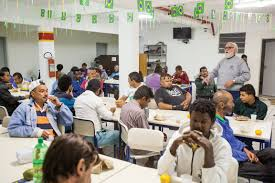
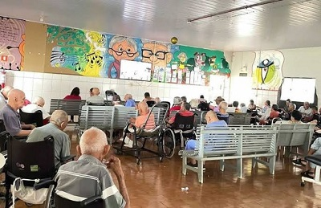
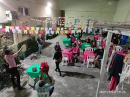
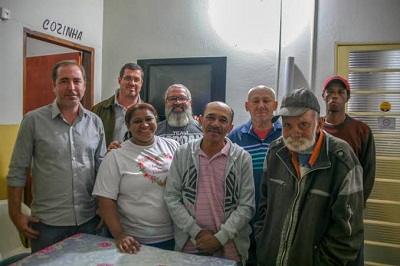
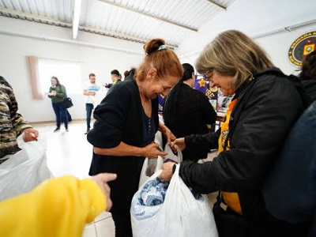
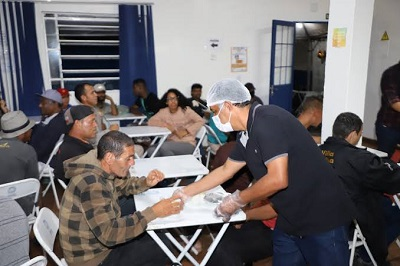
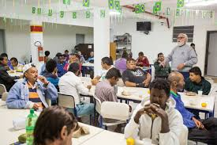
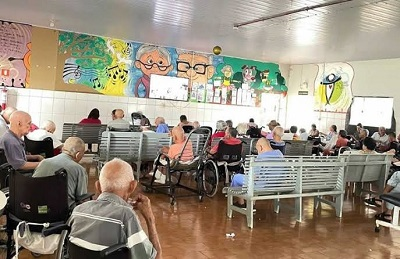
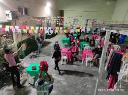
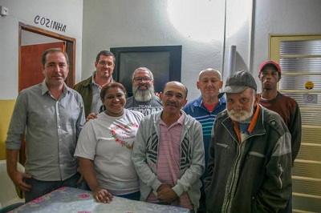
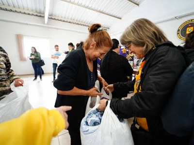
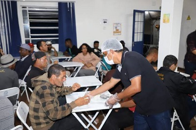